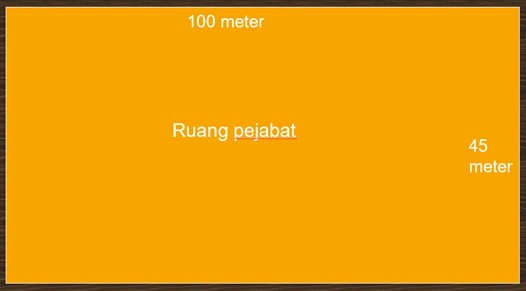
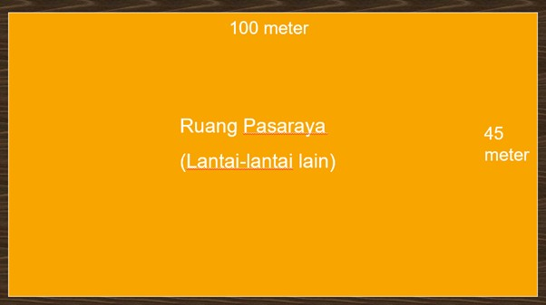
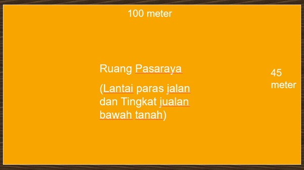

Contoh Pengiraan
Contoh Pengiraan Lebar Tangga Pejabat
Katakan kita mempunyai bangunan empat tingkat yang terdiri daripada 3 tingkat pasaraya dan 1 tingkat pejabat di bahagian atas sekali. Jadi kita akan kira berapa lebar tangga dan jumlah tangga yang perlu diadakan. Saiz pejabat adalah seperti berikut.

- Keluasan lantai: 100m x 45m = 4,500 m²
- Jumlah orang: 4,500 / 10 (faktor pejabat) = 450 orang
- Lebar diperlukan (tangga): 450 / 60 (kapasiti tangga) = 7.5 unit -> 8 unit
- Nota: Hasil bahagi 1/3 atau lebih hendaklah dibulatkan kepada nombor besar yang hampir dan sebaliknya.
- Jumlah lebar tangga: 8 unit x 550 mm = 4400 mm
- Berdasarkan kepada pengiraan di atas, kita telah berjaya mendapatkan jumlah lebar tangga yang diperlukan. Isu yang seterusnya ialah berapa jumalah tangga yang diperlukan pula? Merujuk kepada Building Research Establishment, British Standard, jumlah jalan keluar yang diperlukan boleh diperolehi dengan menggunakan formula di bawah:-
- Jumlah tangga: (U/F) + 1 = (8/4) + 1 = 3 buah tangga (menggunakan Faktor 4 untuk bangunan Kelas B)
-
Kelebaran minima tangga yang diperlukan:
Jumlah lebar = 4400 mm
Jumlah tangga = 3 unit
Jika kita bahagi terus jumlah lebar dan jumlah tangga, satu lebar tangga yang diperlukan lebih kurang 1.5 meter tetapi merujuk kepada UUK 177 (a), satu daripada tangga keluar itu hendaklah dianggap tidak boleh dilalui dan tangga keluar yang tinggal itu hendaklah dari lebar dan bilangan yang mencukupi untuk menampung pendudukan yang berkenaan. Tangga yang dianggap tidak boleh digunakan mestilah tangga yang paling lebar sekali. Maka, semua tangga kita anggap mempunyai lebar yang sama. Oleh itu :- Tangga pertama = 2200 mm
- Tangga kedua = 2200 mm
- Tangga ketiga = 2200 mm

Contoh Pengiraan Lebar Pintu Keluar Pejabat


Keluasan lantai = 100 meter panjang x 45 meter lebar = 4,500 meter persegi
Jumlah orang = keluasan lantai / beban pendudukan semeter persegi
= 4,500 / 10
= 450 orang
Lebar yang diperlukan = 450 orang / 100
= 4.5 unit
= 5 unit
Nota: Hasil bahagi 1/3 atau lebih hendaklah dibulatkan kepada nombor besar yang hampir dan sebaliknya.
Jumlah lebar pintu yang diperlukan = 5 unit x 550 mm
= 2750 mm @ 2.75 meter
Kelebaran minima pintu tangga yang diperlukan:
Jumlah lebar = 2750 mm
Jumlah tangga = 3 unit
Jika kita bahagi terus jumlah lebar pintu tangga dengan jumlah tangga, satu lebar pintu tangga yang diperlukan lebih kurang 0.92 meter. Saiz pintu api satu daun yang umum ialah 900mm x 1200mm. Merujuk kepada UUK 177 (a), satu daripada tangga keluar itu hendaklah dianggap tidak boleh dilalui dan tangga keluar yang tinggal itu hendaklah dari lebar dan bilangan yang mencukupi untuk menampung pendudukan yang berkenaan. Jadi, setiap tangga perlu menggunakan pintu api jenis dua daun. Oleh itu:
- Lebar pintu tangga pertama = 1800 mm
- Lebar pintu tangga kedua = 1800 mm
- Lebar pintu tangga ketiga = 1800 mm

Contoh Pengiraan Lebar Tangga Pasaraya
Dalam menentukan lebar pintu tangga pasaraya, kita perlu berhati-hati dalam memilih faktor beban pendudukan. Seperti yang kita ketahui, pasaraya adalah di bawah kategori kumpulan maksud kedai. Di bawah kumpulan maksud kedai, faktor beban pandudukan adalah berbeza mengikut tingkat. Bagi lantai paras jalan dan tingkat jualan bawah tanah, faktor beban pendudukan semeter persegi ialah 3 kasar. Manakala bagi lantai-lantai lain, faktor beban pendudukan semeter persegi ialah 6 kasar.
Contoh pengiraan lebar tangga ini adalah merujuk kepada lantai-lantai lain bagi pasaraya. Memandangkan ruang pasaraya adalah sama besar dengan ruang pejabat, maka saiz ruang pasaraya adalah seperti berikut:
Berdasarkan kepada pengiraan di atas, kita telah berjaya mendapatkan jumlah lebar tangga yang diperlukan. Isu yang seterusnya ialah berapa jumlah tangga yang diperlukan pula? Merujuk kepada Building Research Establishment, British Standard, jumlah jalan keluar yang diperlukan boleh diperolehi dengan menggunakan formula di bawah:-
Jika kita bahagi terus jumlah lebar dan jumlah tangga, satu lebar tangga yang diperlukan lebih kurang 1.8 meter tetapi merujuk kepada UUK 177 (a), satu daripada tangga keluar itu hendaklah dianggap tidak boleh dilalui dan tangga keluar yang tinggal itu hendaklah dari lebar dan bilangan yang mencukupi untuk menampung pendudukan yang berkenaan. Tangga yang dianggap tidak boleh digunakan mestilah tangga yang paling lebar sekali. Maka, semua tangga kita anggap mempunyai lebar yang sama. Oleh itu :
Bagi contoh pengiraan lebar tangga lantai paras jalan dan tingkat jualan bawah tanah adalah seperti berikut:
Berdasarkan kepada pengiraan di atas, kita telah berjaya mendapatkan jumlah lebar tangga yang diperlukan. Isu yang seterusnya ialah berapa jumlah tangga yang diperlukan pula? Merujuk kepada Building Research Establishment, British Standard, jumlah jalan keluar yang diperlukan boleh diperolehi dengan menggunakan formula di bawah:-
Kelas A = 5
Kelas B = 4
Kelas C = 3
Jika kita bahagi terus jumlah lebar dan jumlah tangga, satu lebar tangga yang diperlukan lebih kurang 2.3 meter tetapi merujuk kepada UUK 177 (a), satu daripada tangga keluar itu hendaklah dianggap tidak boleh dilalui dan tangga keluar yang tinggal itu hendaklah dari lebar dan bilangan yang mencukupi untuk menampung pendudukan yang berkenaan. Tangga yang dianggap tidak boleh digunakan mestilah tangga yang paling lebar sekali. Maka, semua tangga kita anggap mempunyai lebar yang sama. Oleh itu :